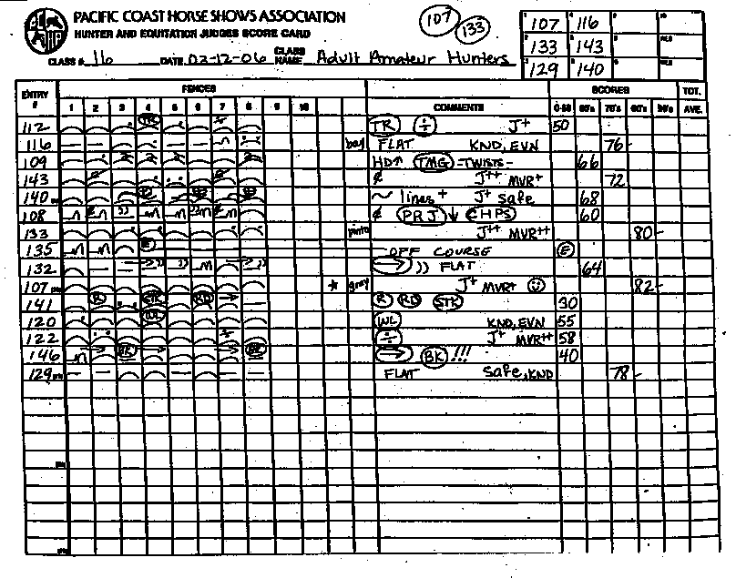

How Do Judges Score a Round?

Hunter Scoring
In hunter competitions, judges use a scorecard to evaluate each horse's round. As the horse and rider go through the course, the judge writes symbols or shorthand marks for each jump. These might indicate things like a chip (when the horse takes an awkward short stride before a jump), a swap of leads, a late change, or a refusal. They also make quick notes on the overall impression, such as “nice jump,” “tight knees,” or “poor mover.” After the round is complete, the judge reviews these notes and assigns a score from 0 to 100, with 70s being average, 80s being solid, and 90s being excellent. The goal is to have a smooth, consistent round that looks effortless and stylish, showcasing the horse’s rhythm, jump form, and manners. After all the riders have completed their round, the highest score gets first place and so on.
Cindy Hale - Horse Illustrated
Specific Things Hunter Judges Look For:
-
Pace
Judges want to see a consistent, forward, and rhythmic pace throughout the entire course. The horse should maintain the same tempo from start to finish without rushing or slowing down. They want to see the horse flow.
-
Movement
Judges look for big, sweeping strides with a soft, elegant look. A horse that moves naturally and fluidly is typically scored higher than one that looks stiff or choppy. However, horses with nice movement can also get a lower score due to other factors, including rider error.
-
Scope
This refers to the horse’s ability to jump with ease, clearing fences with room to spare. A horse with good scope will jump high and wide enough to make the course look effortless while staying balanced and controlled in the air. These horses have no problem clearing the jump and will not hit the rail down.
-
Quality
Quality includes the horse’s overall appearance, presence, and elegance. Judges take into account the horse’s conformation, coat condition, and how polished or clean they are when they step into the ring. A refined, athletic-looking horse with good manners stands out.
-
Performance
This covers the overall execution of the course. Judges evaluate how well the horse handles each jump, how accurately the rider navigates the track, and how harmonious the pair looks together. Mistakes like chips, swaps, or refusals will lower the score, while a confident, smooth round is rewarded.
Watch a perfect 100 score round in the hunters here.
Back to Home